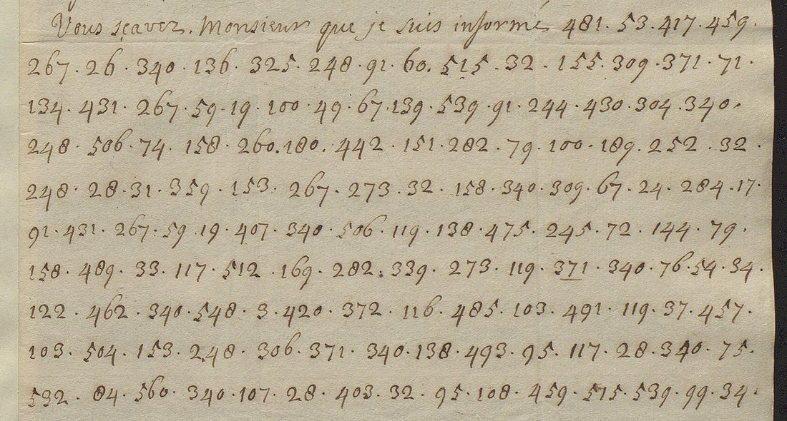

At a glanceNot solved · 0 of 173 code groups
- The letter
- A copy of a letter from the maréchal de Villars to the abbé Melchior de Polignac, French plenipotentiary at Geertruidenberg, written at the camp of Arleux on 1 June 1710. It was intercepted.
- Where
- British Library, Add MS 61575 (Blenheim Papers), f. 44; DECODE R8756, which lists Villars as the receiver. He is the sender.
- The cipher
- A numerical code: 173 groups, 106 distinct, values 3–560. Group 340 occurs ten times.
- How it was tried
- The DECODE transcription was checked against the images and corrected. Tomokiyo’s table of the 1710 Desmarets code and the marquis de Rose’s code (R8768) were tried. Neither fits.
- What was added
- One misread figure and a false gap in the DECODE transcription corrected; sender and receiver on DECODE corrected.
- Still open
- The whole cipher passage. No key is known, and 173 groups are too few to rebuild one.
01 The letter
In the spring of 1710 Louis XIV sent the maréchal d’Huxelles and the abbé de Polignac to Geertruidenberg, in Holland, to negotiate peace with the Allies. Some of their correspondence was intercepted and passed to the English, and two cipher letters from it are in the Blenheim Papers at the British Library, Add MS 61575. This page is the second. The first, Torcy’s letter to the plenipotentiaries of 3 April 1710, is in a different code: Torcy to the plenipotentiaries, 1710 (a different cipher, with its own page).
Folio 44 (DECODE R8756, two images) is a copy headed “Copie d’une Lettre du mareschal de Villars a l’Abbé de Polignac, en datte du Camp d’Arleu le 1er Juin 1710”. A clear paragraph says that the enemy have gathered all their forces in their entrenchments and that Villars cannot draw them out to battle; then “Vous scavez, Monsieur, que je suis informé” and 173 groups of figures, and a clear close signed “Le Mar Duc de Villars”. A modern note on the page reads “with W. Blencowe 5 June 1710”: William Blencowe was Queen Anne’s decipherer.

02 The code
DECODE holds a transcription (Satoshi Tomokiyo’s, the file his Cryptiana article links to, which is dead there). It was compared with the images line by line: one figure is misread (575 for 515), and an underline after 524 was taken for a gap. Corrected, the cipher is 173 groups, 106 distinct, values 3–560. Group 340 occurs ten times, 28 five times, and 32, 91, 158, 248, 267 and 371 four times each.
Tomokiyo had already noted that this letter and Torcy’s use different ciphers, and the value ranges confirm it: Torcy’s code runs to 823 with 285 distinct values over 690 groups.
03 What was tried
Tomokiyo’s page on Blencowe’s work (blencowe2.htm, last changed November 2024) lists the letter as having no decipherment and gives only its frequent groups. No edition or decipherment turned up online. Villars’s Mémoires (ed. Vogüé), vol. 3, print his letters to Polignac of 24 May and 28 June 1710 and his letter to Voysin of the same 1 June, on the same subject as the clear opening, but not this one. Two keys were applied:
- Tomokiyo’s table 11B, the code of Desmarets’s letter of 4 June 1710 on the same negotiations (see Desmarets 1710), about 190 values from his published table. It covers 41 of the 173 groups and the result is nonsense; the commonest group, 340, is not in it.
- R8768, the marquis de Rose’s code in the same volume (1–578, “de” = 12), with Jacobite names of 1715–18. The letter has no 12, and the names are after 1714.
The other keys of the volume and the period (R8766, R8767, DECODE R587, BnF fr. 6204) were tried on Torcy’s letter, not on this one. All of Add MS 61575 on DECODE (R8746–R8774) was opened: the Petkum letters of 1709, the anonymous letter of 10 February 1710 (R8753, R8754, a small code reaching about 409) and the keys R8757–R8770 are other codes, English, or later than 1711.
04 What remains
- The cipher part (f. 44, 173 groups): not read. Blocker: no key material. No key fits, and 173 groups of a code of 500 or more values are too few for a ciphertext-only attack.
- A lead not followed: the anonymous letter of 10 February 1710 (R8753/R8754), which Blencowe partly deciphered, uses a small code to about 409. Its range differs from this one, but the two were not compared value by value.
05 Sources
- British Library, Add MS 61575 f. 44, DECODE R8756 (images by login). Sibling records R8746–R8774; key R8768.
- S. Tomokiyo, Cryptiana, “Blencowe” (blencowe2.htm) and Cipher Used in Louis XIV’s Reign (11B).
- Villars, Mémoires, ed. de Vogüé, vol. 3, appendix, nos. 48–52.
Transcription (villars_groups.txt), the DECODE document, notes and profile: targets/villars1710/.